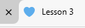

| Tag | Definition | Examples |
|---|---|---|
| <!DOCTYPE html> | an element that gives instruction to the web browser about the version of HTML the page is written in. Begin your code with this tag. | no example. |
| <html lang="en"> | The lang attribute specifies the language of the content. This tag helps websites such as Google Translate know the default language for this page is English. | This page is set to “en” for English. |
| <meta charset="UTF-8"> | tells the browser how to read and display text on the page. | no examples |
| <meta http-equiv="refresh" content="0; url=$URL"> | automatically redirects the page to a new URL after a set time. | no examples. |
| <title> | sets the name of the webpage that appears on the browser tab. | |
| <style>...</style> | Section that describes the internal CSS. | <style> td#example { background-color: lightblue; }</style> |
| <link rel="stylesheet" href="..."> | Tag that points to an external CSS file. | Both this and the previous web pages point to a common style.css file that controls the way these pages look. |
| <link rel="icon" type="image/x-icon" href="..."> | Tag that adds a favicon. |
 |